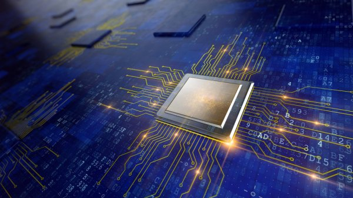
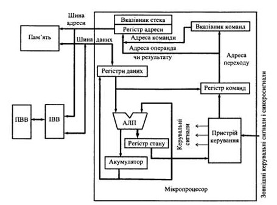

Поняття архітектури мікропроцесора визначає його складові частини, а також зв'язки та взаємодію між ними. Архітектура містить: 1) структурну схему самого МП; 2) програмну модель МП (опис функцій регістрів); 3) інформацію про організацію пам'яті (ємність пам'яті та способи її адресації); 4) опис організації процедур введення-виведення. Існують два основних типи архітектури мікропроцесорної системи – фоннейманівська та гарвардська. Структурні схеми обох архітектур містять: процесорний елемент, пам'ять, інтерфейси введення-виведення (ІВВ) і пристрої введення-виведення (ПВВ). Пам'ять і ІВВ для різних типів МП можуть бути як внутрішніми (розміщуватися на тому ж кристалі, що і процесорний елемент), так і зовнішніми. Процесорний елемент містить регістри, арифметико-логічний пристрій (АЛП), пристрій керування і виконує функції обробки даних та керування процесами обміну інформацією. Пам'ять забезпечує зберігання кодів команд програми і даних. Інтерфейси призначені для зв'язку з ПВВ (наприклад, з клавіатурою, дисплеєм, принтерами, датчиками інформації). Усі елементи структурної схеми з'єднані за допомогою шин.
